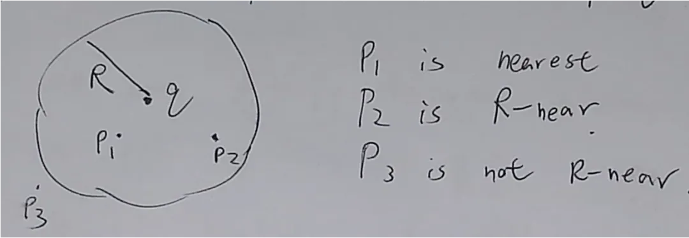
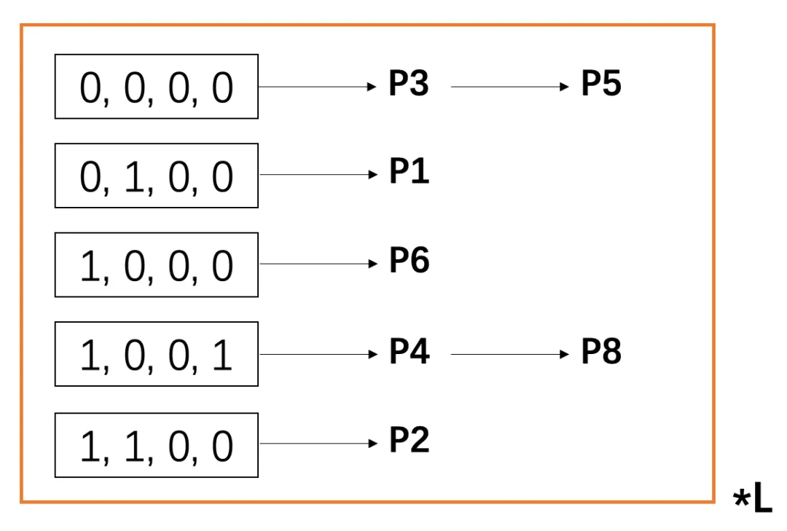
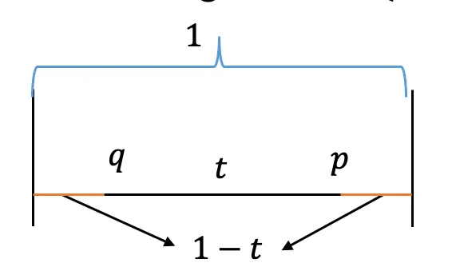

Dimension Reduction
对于输入的一系列点: $x_ 1,…,x_ n\in \mathbb{R}^d$,我们想要在一个更低维度的空间研究他们，一种常见的方法就是Random Projection。
这里我们应用JL-Lemma的结论，也就是说如果我们关心的是Pairwise Distance的话，我们可以通过一个随机矩阵$A\in \mathbb{R}^{d \times m}\sim \frac{1}{\sqrt{d}}\mathcal{N}(0,1)$来构造一个映射：$f(x)=Ax$，$f: \mathbb{R}^d\rightarrow \mathbb{R}^m$，对于$$m=\Omega(\frac{\log n}{\epsilon^2})$$ 我们可以保障pairwise distance的误差在$\epsilon$之内，即 $$ (1 - \epsilon) |v^i - v^j|_ 2 \leq |f(v^i) - f(v^j)|_ 2 \leq (1 + \epsilon) |v^i - v^j|_ 2. $$
PCA
但有的时候我们不关心pairwise distance, 这里我们将另外一种非常流行的数据降维方法: 主成分分析。
Keep Most Variance
主成分分析的第一种解读方式是我们想要找到一个方向$v$，使得它能够保留和数据点之间最大的方差。首先得定义下方差： $$\mathbb{E}_ {x_ i}[\langle x_ i, v\rangle^2]$$
那么对于n个数据点$x\in \mathbb{R}^d$构成的矩阵$X\in \mathbb{R}^{n \times d}$(每行对应一个数据点): $$\frac{1}{n}\sum_ {i=1}^n(v^T x_ i)^2=\frac{1}{n}v^T X X^T v$$
这里的$X^T v$获得更多维度$X^T V\in \mathbb{R}^{n \times k}$就是数据降维后的结果。
Minimize Reconstruction Error
由于勾股定理，这里还有另一种理解方法：

就是原来的$||x||$长度不变，你在最大化投影距离: $\max||v^T x \cdot v||$，那么由于勾股定理，你同时就在最小化$||x-(v^T x)\cdot v||$
也就是说当我们找到了$v_ 1,…,v_ k$之后，我们将原来的数据点投影到这个线性生成的子空间中，没有损失太多的信息。
所以我们想要的就是: $$\max_ v v^T X X^T v\quad s.t. ||v||=1.$$ 学过线性代数的我们一看就知道我们要找的是最大的特征向量啊，那么怎么去算呢？
Power Method
取$b_ 0$为$\mathbb{R}^d$空间上的一个随机向量，那么因为实对称矩阵能够特征值分解，所以$$b_ 0=\sum_ i \alpha_ i v_ i$$ 其中$v_ i$代表$X X^T$的特征向量。
然后我们用这种方法更新$b$:
$$b_ {t+1}=\frac{(X X^T)b_ t}{||X X^T b_ t||}$$ 这个时候呢，因为特征值的定义，就会发生： $$b_ t=\sum_ i \lambda_ i^t \alpha_ i v_ i$$ 不同分量之间的magnitude以指数的形式被拉开，在$t$足够大的时候，我们就可以认为: $b_ t=v_ 1$了。
当我们知道了$v_ 1$之后，我们可以通过$b_ 0=b_ 0-\langle v_ 1, b_ 0 \rangle \cdot v_ 1$来获得剔除了$v_ 1$的向量，然后就可以算出$v_ 2$，依次类推。
学过线性代数的我们知道$X=U \Sigma V^T$，所以其实我们找的$X X^T$的特征值就是$U$的前k列。
Nearest Neighbor
接下来继续讲一个非常有趣的问题，这个问题是Supervised Learning的问题，但是和后面Clustering之类的关系挺密切，所以也放在这一章讲了。
k-NN Algorithm
这里我们考虑一个分类问题，我们的假设是我的label由我的neighbor的label决定，这是一个non-parametric的方法，没有模型参数，取决于数据集。
一个empirical的观察是随着k越来越大，模型的分界线也变得越来越平滑。
现在一个核心问题是：我怎么找到一个query point附近的邻居呢？
LSH Algorithm
准确的neighbor search是困难的，而且我们也没那么关心，我们想要的是一个Approximate的算法。
这里我们考虑刚才这个问题的等价问题：
-
Nearest Neighbor Problem(原问题):
Find closest $p\in P$ (L2 norm)
-
R-Near Neighbor Problem(转化的问题):
Find $p\in P$ s.t. $||p-q||<R $

这两个问题的等价性并不难证明:
$\Rightarrow:$ 找到的nearest neighbor,算一下距离是否$<R $即可。
$\Leftarrow:$ 从$R=1,2,4,… $上试，只需要$\log$次查询也能找到最近邻。
接下来，我们先引入一个定义:
Randomized c-approximate R-near neighbor, or $(c, R)$-NN:
- 给定一组点$P$ 在 $\mathbb{R}^d$ 中，以及参数$R > 0 ,\delta > 0$
- 构造一个数据结构，使得对于任意查询点 $q$，如果 $P$ 中存在一个 $R$-近邻，则以概率 $ 1 - \delta $ 返回 $ q $ 在 $ P $ 中的某个 $cR$-近邻。
注意到这个$\delta$可以通过重复跑$t$次这个算法降低到$\delta^t$。
好的，接下来进入正题，我们想要构造这样的数据结构，我们需要借助于local sensitive-hashing(LSH) family:
Locality-sensitive hashing (LSH)
- 一个Hash Family $\mathcal{H}$ 被称为 $(R, cR, P_ 1, P_ 2)$-sensitive，如果对于任意两个点 $p, q \in \mathbb{R}^d$ 满足以下条件：
- 如果 $|p - q| \leq R$，则：$$\Pr_ {h \sim \mathcal{H}}[h(q) = h(p)] \geq P_ 1$$
- 如果 $|p - q| \geq cR$，则：$$\Pr_ {h \sim \mathcal{H}}[h(q) = h(p)] \leq P_ 2$$
为了使 LSH 有用，必须满足 $P_ 1 > P_ 2$。
举个LSH的例子：
考虑所有数据点都$\in {0,1}^d$,distance由Hamming Distance决定。
我们构造这样一组hash function: $$h_ i(p)=p_ i$$ 也就是返回查询点的第$i$个坐标的值，这个Hash Family一共有$d$个hash function。
接下来，我们验证下他是一个LSH:
因为我们是随机去$h\sim \mathcal{H}$，所以说
$$Pr[h(p)=h(q)]=\frac{ ||p-q||_ 1 }{d} $$
所以$P_ 1=1-\frac{R}{d}>1-\frac{cR}{d}=P_ 2$.
直觉上理解，一个最理想的LSH想干的事情是把相邻的点都映射到同一个铜里，而距离远的点都映射到相异的桶里，理想情况$P_ 1=1,P_ 2=0$，但无法达到。
接下来讲一下具体的算法:
Table Construction
- 构造一个 $L \times k$ 的矩阵，其中每个元素是一个哈希函数 $h_ {i,j}$，该函数从 LSH Family中随机选择。
- 构造 $L$ 个哈希表，第$i$个哈希表对应矩阵的第 $i$ 行包含 $k$ 个元素： $$ g_ i = (h_ {i,1}, h_ {i,2}, \dots, h_ {i,k}) $$
Construct the Database
-
对于每一个表$i \in [L]$：
-
对于每一个点 $p_ j, j\in [n]$:
计算 $g_ i(p_ j)\in {0,1}^k$（这里不妨假设每一个hash function的输出都是0或1），放入对应桶中
-

这里需要的内存是$O(n \cdot L)$.
Query Algorithm for Point $q$
- 过程：
- 对于 $j = 1, 2, \dots, L$：
- 计算 $g_ j(q)$ 在第 $j$ 个哈希表中的值，并找到对应桶中的所有点。
- 对于桶中的每个点，计算它到查询点 $q$ 的距离。
- 如果它是 $cR$-近邻，则报告该点。
- 当我们已经找到超过 $L’=2L+1$ 个点时，停止搜索。
- 对于 $j = 1, 2, \dots, L$：
这个算法为什么对？因为有如下定理：
Theorem:
如果存在 $p^* \in B(q, R)$，则我们以至少 $ \frac{1}{2} - \frac{1}{e} $ 的概率找到一个 $q$的$cR$-近邻点。
有了这个定理，我们可以通过 $\mathcal{O}\left(\frac{1}{\delta}\right)$ 次重复算法（使用不同的哈希表），将成功概率提升到 $1 - \delta$。那就ok了，接下来我们证明这个定理：
定义： $$ \rho = \frac{\log \frac{1}{P_ 1}}{\log \frac{1}{P_ 2}} $$ 设置： $$ k = \log_ {1/P_ 2}(n), \quad L = n^\rho $$
定义： $$ P’ = P - B(q, cR) $$
如果存在 $p^* \in P$ 是 $R$-近邻，则对于 $p’ \in P’$，其满足 $g_ i(p’) = g_ i(q)$ 的概率最多为： $$ P_ 2^k = \frac{1}{n} $$ 这对每个 $g_ i$ 都成立。 所以说 $$\mathbb{E}[ \text{number of } g_ i \text{ wrong points in }P’]\leq 1$$ 所以$$\mathbb{E}[\text{total wrong points}]\leq L$$ 接下来用Markov不等式，有: $$\Pr[\text{total wrong points}\geq 2L]\leq \frac{1}{2}$$
接下来，我们再去考虑这个$p*$:
$$\Pr[g_ i(p*) = g_ i(q)] \geq P_ 1^k = P_ 1^{\log_ {1/P_ 2}(n)} = n^{-\frac{\log(1/P_ 1)}{\log(1/P_ 2)}} = n^{-\rho}$$
-
因为 $L = n^\rho$，我们有： $$ \Pr[g_ i(p^*) \neq g_ i(q), \forall i] \leq (1 - n^{-\rho})^{n^\rho} \leq \frac{1}{e} $$
-
所以： $$ \Pr[\exists i, g_ i(p^*) = g_ i(q)] \geq 1 - \frac{1}{e} $$
-
因此，这两个事件同时成立的概率： $$ \geq\frac{1}{2} - \frac{1}{e}. $$
LSH Example
在L2中的LSH Family示例： $$h_ {r,b}=\lfloor \frac{\langle r,x \rangle+b}{w}\rfloor$$
- $w$ 是单位长度（unit length），为一个超参数。
- $r \in \mathbb{R}^d$，从高斯分布中采样。
- $b \sim \text{unif}[0, w)$，从均匀分布中采样。
给定两点 $p, q$:
- $\langle r, p \rangle$，$\langle r, q \rangle$，以及 $\langle r, p - q \rangle$ 都服从高斯分布。
一种直观的理解方式是：
- 将所有向量投影到一条直线上，并将直线分成不同的桶。
- 如果 $\langle r, p \rangle$ 和 $\langle r, q \rangle$ 落在相同的桶中，则两点会得到相同的哈希值。
Simple Case: $w = 1$
- 当 $|p - q|_ 2 = 1$ 时，在同一个桶中的概率由以下公式给出： $$ P(c) = \Pr[h_ {r,b}(p) = h_ {r,b}(q)] = 2 \int_ 0^1 f_ p(t)(1 - t) , dt $$

解释：
-
当 $\langle r, p - q \rangle = t$ 时，$p, q$ 在一个桶中的概率为 $1 - t$。
-
$t$ 的取值在 $[0, 1]$ 上，且 $[-1, 0]$ 和 $[0, 1]$ 对称，因此积分结果乘以 $2$。
-
$\langle r, p - q \rangle$ 服从高斯分布，所以： $$ \Pr[\langle r, p - q \rangle = t] = f_ p(t) $$
Scaled Case: General $w$ and $|p - q|_ 2$
- 定义 $c = |p - q|_ 2$，在同一桶中的概率为： $$ P(c) = \Pr[h_ {r,b}(p) = h_ {r,b}(q)] = \int_ 0^w \frac{2}{c} f_ p\left(\frac{t}{c}\right) \left(1 - \frac{t}{w}\right) , dt $$
解释：
-
关于 $f_ p$ 的缩放：
- $f_ p$ 是高斯密度分布，$\frac{1}{c} f_ p\left(\frac{t}{c}\right)$ 来源于缩放。
-
高斯分布归一化： $$ \int_ {-\infty}^\infty \frac{1}{\sqrt{2\pi}} \exp\left(-\frac{\left(\frac{x}{c}\right)^2}{2}\right) , dx = \int_ {-\infty}^\infty \frac{1}{\sqrt{2\pi}} \exp\left(-\frac{u^2}{2}\right) c , du = c $$
值得注意的是，$P(c)$ 随 $c$ 递减（给定 $w$ 的情况下）。
Metric Learning
好了，我们现在有获得k-近邻的算法了，但是有些时候在原来的空间上选邻居并不是最佳选择。我们可以通过神经网络找到一个更好的feature space，在这个空间上做k近邻。
也就是说我们想要找到一个原空间到feature space的映射：$f: \mathbb{R}^d\rightarrow \mathbb{R}^k$。那么，什么是一个好的映射呢？我们希望在这个feature space中相同标签的点有相近的距离，反之亦然。
但是原来的kNN是没有gradient信息的，那么又到了这个重要的思想: Make Hard things Soft,下面介绍NCA算法。
$$p_ {i,j}=\frac{\exp(-||f(x_ i)-f(x_ j)||^2)}{\sum_ {k\neq i}\exp(-||f(x_ i)-f(x_ k)||^2)}$$ $$p_ {i,i}=0$$
定义 $C_ i = {j ,|, c_ i = c_ j}$其中 $c_ i$表示数据点 $i$ 的类别。
定义 $P_ i$ 为类别内的概率和： $$ P_ i = \sum_ {j \in C_ i} p_ {ij} $$
定义目标函数 $L(A)$ 为所有类别内概率和的总和： $$ L(A) = \sum_ i \sum_ {j \in C_ i} p_ {ij} = \sum_ i P_ i $$
LMNN: triplet loss
和NCA并列的还有另一种算法，也是为了学习一个好的feature space。
Ranking Loss定义： $$ L_ {\text{rank}} = \max(0, |f(x) - f(x^+)|_ 2 - |f(x) - f(x^-)|_ 2 + r) $$
- $r$：Margin（边界）。
- 比较正样本 $x^+$ 和负样本 $x^-$ 的距离。
如何选择 $x^+$ 和 $x^-$？选择接近最坏的样本（almost-worst cases), 为什么需要这样选择？Loss 可能很快趋于 $0$，导致训练无效。